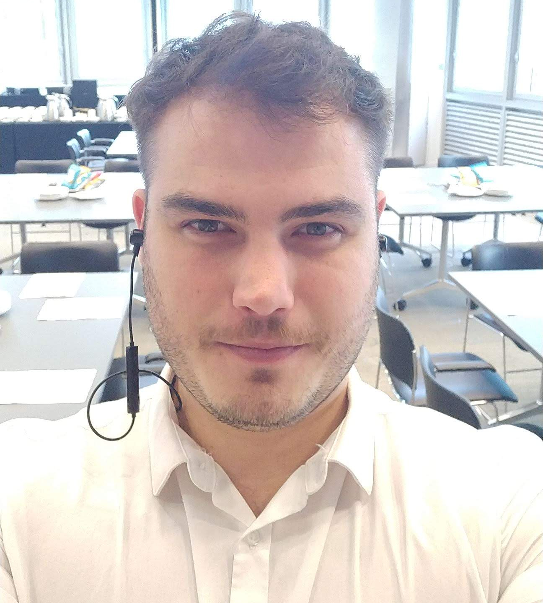

about-me.html
about-me

Solving... Tonight!
Your multi-tool for all things digital
About Me
Anthony Bell, Head of Digital

- 7 years of digital experience in start/scale ups across Sydney, London and New York.
- Held regional head of marketing, global head of digital and lead generation/life-cycle roles.
- Experience across the full marketing mix, with specialisation in marketing automation, website development, and B2B lead generation journeys.
-
Full-stack web development with Coder Academny, currently learning Python, Javascript with MERN stack, html and CSS
>